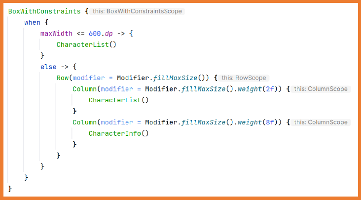
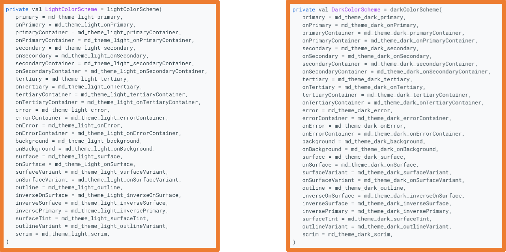

With the traditional Android (Views) programming, each screen of the application was implemented in a
different Activity.
This required the use of navigation graphs, instructions for starting Activities,
creating elements to send information to the new window, and to receive information upon closing the window.
With Jetpack Compose, the entire navigation process is simplified because the structure of a
Compose-developed application is based on a Single Activity.
Single Activity means that there is only one Activity managing all interface elements,
which are divided into different Compose components in Jetpack Compose.
From this point on, it is very important to have all your application code organized into folders.
To do this, you can create a folder named screens inside ui where you place the different components of each screen.
Inside the screens folder, you can directly keep the .kt files for each screen, or you can create new folders if each screen is composed of multiple .kt files.
The example to be studied is an application with two screens.
The first screen will show a TextField for entering a name and a button to navigate to the second screen while sending it the name.
The second screen will display the received name and a button to go back.
To implement navigation with Jetpack Compose, you must add the following dependency in build.gradle.kts (Module)
and then synchronize:
Navigation in Jetpack Compose requires two elements:
NavController: it controls the navigation.
NavHost: it displays each of the screens to which navigation occurs.
The element NavHost defines the different screens to which you can navigate
and also needs the NavController.
The first step is to create a folder named navigation and
inside it create a file named Routes that will contain a sealed class
where all the application screens are defined for centralization.
Routes.kt
sealed class Routes(val route:String){
object FirstScreen: Routes("first_screen")
object Secondcreen: Routes("second_screen/{name}"){
fun createRoute(name:String) = "second_screen/$name"
}
}
Because the second screen receives a parameter, it must be specified in the route. Also, a function is created to work more easily with the route that receives the parameter.
Next, within the navigation folder, create a file that contains a
@Composable component named Navigation.
In this file, you define the NavController and the NavHost.
@Composable
fun Navigation() {
//Constant to manage the state, which must be propagated across all screens
val navController = rememberNavController()
//Element that knows the different screens and which is launched first
NavHost(
navController = navController,
startDestination = Routes.FirstScreen.route
){
//Definition of the first screen
composable(
route = Routes.FirstScreen.route
){
FirstScreen(navController)
}
//Definition of a screen that receives a String parameter
composable(
route = Routes.Secondcreen.route,
arguments = listOf(
navArgument(name = "name"){
type= NavType.StringType
}
)
){
val argument = it.arguments?.getString("name")
requireNotNull(argument)
SecondScreen(navController, argument)
}
}
}
The parameter can be any primitive type.
It must match the parameter specified in the function that creates the route.
In the example, two screens have been defined:
The first will load the FirstScreen component receiving the NavController.
The second will load the SecondScreen component receiving the NavController
and also a String argument. This argument must be passed when navigating to that screen.
The NavController object should be passed to any component where interacting with it triggers a screen change (navigation).
It’s impossible for the argument to be null because it’s defined in the route and
whenever you navigate programmatically, you will pass the argument. But Android Studio still forces you to indicate that it could
be null, so you need to use requireNotNull(variable) in your screen component before calling it.
For the second screen, you also retrieve the parameter with it.arguments?.getString("name").
The next step is to indicate in the MainActivity file that you are going to use the
Navigation component.
Recall that the AppContent component was the one created to hold the basic structure of the application
with its theme and Surface.
This completes the navigation system. All that remains is to create the content of the application’s screens.
@OptIn(ExperimentalMaterial3Api::class)
@Composable
fun SecondScreen(navController: NavController, name:String) {
Scaffold(
topBar = {
TopAppBar(
title = {
Text(text = "Second Screen")
},
navigationIcon = {
IconButton(onClick = {
//Go back to the previous element in the navigation stack
navController.popBackStack()
}) {
Icon(
imageVector = Icons.Default.ArrowBack,
contentDescription = "Arrow Back"
)
}
})
}
) {
Column(
modifier = Modifier
.fillMaxSize()
.padding(it),
verticalArrangement = Arrangement.Center,
horizontalAlignment = Alignment.CenterHorizontally
){
Text(text = "I have navigated")
Text(text = "Parameter: $name")
Button(onClick = {
navController.popBackStack()
}) {
Text(text = "Go back")
}
}
}
}
In Android, when navigating between screens, they accumulate in the screen stack. So, to go back, we used the
popBackStack function of the navController, which takes you to the previous screen.
If we had navigated to FirstScreen again, we would again be adding that screen to the stack.
Sending Multiple Arguments to a Screen
Routes.kt Navigation.kt FirstScreen SecondScreen
Default Parameters
Because parameters are defined, they are required. If you want them optional, you must specify it in both the
Routes and Navigation files as follows:
Routes.kt Navigation.kt
Obviously, you can specify multiple optional parameters or mix mandatory with optional ones.
BackHandler
Android devices generally have a button that takes you back to the previous screen. Additionally, apps sometimes show
a back arrow in the top bar to do the same thing.
These buttons always execute navController.popBackStack().
This action always returns to the previous screen, whether it’s from your app or from somewhere else; in fact, if
you just opened one operation from the home screen, pressing the back arrow would bring you back to the home
screen.
You can change this behavior by using the BackHandler component.
If you set the property enabled = true, the back buttons will remain disabled all the
time.
It’s not advisable to keep enabled always as true, because in that case you’d never be
able to exit the application.
Typically, you’ll link enabled to a state variable:
Adaptive Layouts
Mobile devices come in different screen sizes and resolutions.
If we know the screen size and orientation, we can decide which components to display on the screen.
For example, master-detail applications might show certain components or others depending on the width.
There are several ways to determine the screen size and orientation.
From setContent
First, we must add the material dependency in build.gradle (Module: app):
This way, we know the maximum available dimensions. This check should be done at the highest possible level,
for example in the composable function of NavHost when defining the route, so as to have the maximum value.
Once we know the screen size/orientation, we can load one set of components or another. For example:
Depending on the width, we show either one component or two.

Depending on the width, we either show one component or another. The second component includes both MainScreen and DetailContent inside it.
Exercise:
Modify the DragonBall practice app so that it has an adaptive design. That is, it displays as it is in landscape mode,
but in portrait mode it shows separate screens: one with the list and another with the detail.
SplashScreen
A Splash Screen is a window that appears when launching an Activity in an app or a game.
The Splash Screen only appears:
When opening an app if the process associated with that app is not already running.
If the Activity associated with that Splash Screen is not in the stack (with Jetpack Compose and Single Activity, this never happens).
The Splash Screen disappears once all the necessary items for the app have been loaded.
A typical Splash Screen includes:
An image or logo.
The name of the application.
The version of the application.
The names of the developers.
The engine used for development.
It is not mandatory to add a Splash Screen, but it is a good resource to avoid a blank screen while the app is launching and while necessary data are being loaded.
With Jetpack Compose navigation, implementing a Splash Screen is very straightforward:
Create a route for the Splash Screen in Routes.kt.
Add the Splash Screen route to Navigation.kt.
Specify in the NavHost (Navigation.kt) that the Splash Screen is the startDestination.
Create a @Composable component with the Splash Screen content.
In the Splash Screen @Composable, specify that once loading is finished, it navigates to the next screen.
Here is an example of a SplashScreen:
@Composable
fun SplashScreen(navController: NavController) {
LaunchedEffect(key1 = true){
//Here we should perform the system load.
//Access a DB, connect to an API, etc.
//We simulate it with a 5-second delay
delay(5000)
//We remove it from the stack so if the user goes back, they won't return to the SplashScreen
navController.popBackStack()
navController.navigate(Routes.FirstScreen.route)
}
Splash()
}
@Composable
fun Splash() {
Column(
modifier = Modifier.fillMaxSize(),
horizontalAlignment = Alignment.CenterHorizontally,
verticalArrangement = Arrangement.Center
) {
Image(
painter = painterResource(id = R.drawable.logo),
contentDescription = "logo",
modifier = Modifier.size(200.dp,150.dp),
contentScale = ContentScale.Fit
)
Text(
text = "Bienvenidos",
fontSize = 30.sp,
fontWeight = FontWeight.Bold,
color = GreenSerra
)
}
}
We use LaunchedEffect (to be studied later) to execute that code in the background.
In a real application, instead of the delay(5000) instruction, you'd implement the steps to get all necessary application data, for example from a database or an API.
You can design very eye-catching Splash Screens using the animations that will be covered at the end of this unit.
Modify the DragonBall application to include a SplashScreen. This will display the dragon ball from the app and the text "DragonBall" for 3 seconds.
Here is the Github link with the Dragon Ball app updated for Navigation, adapted to Portrait and Landscape, and with a Splash Screen.
Onboarding
Onboarding refers to a set of screens displayed in the app as an introduction to how it works.
Via Onboarding, you can quickly explain to the user how the app works.
You can also request data from the user, for example, in Telegram/WhatsApp, the Onboarding requests the phone number, the confirmation code, and the username.
There are many techniques for Onboarding. In some cases it’s mandatory to go through all steps, in others you can skip them and go directly into the main application.
The Onboarding should only be shown the first time you run the app after installing it.
If, in Onboarding, mandatory data is requested for the app to function, the Onboarding will continue to be displayed until that data is obtained.
In apps where you can log out, the Onboarding will be displayed each time the current user logs out.
You can find numerous online resources and best practices on designing a good Onboarding process.
Below are a couple of examples:
Creating Onboarding with Jetpack Compose and Navigation is quite simple using navigation. You can choose one of these approaches:
Create as many Screens as there are onboarding pages and control navigation among them.
Create a single screen with a HorizontalPager (if mandatory data is collected, you must control navigation between pages with buttons).
When Onboarding is finished, you must navigate to a screen that already shows the app’s functionality.
To show the Onboarding only the first time you launch the app (or whenever it’s needed—for example, if the user logs out), you must store that information somehow.
In UD7 Persistence, you’ll learn how to save app preferences, allowing you to store this data.
Themes
In the previous unit, we studied how to centralize values and thus how to create a color palette within the res -> values -> colors.xml file that can be used to build a theme for the entire application.
Although that file is fully functional, it does not follow the foundations of Material Design and should be avoided.
Within the same folder is the file themes.xml, which specifies the base theme on which the Jetpack Compose theme is built.
When creating a project in Android Studio, by default it creates its own Jetpack Compose theme based on Material Design, which you can customize.
The files for this theme can be found in the ui --> theme folder.
From now on, to configure the application’s theme, we will use these files.
The theme is defined in the file Theme.kt. Its content is as follows:
The Theme.kt is divided into three subsystems:
Color.kt: color palette
Type.kt: text typography
Shape.kt: shapes (this file is not created by default)
Whenever you make any changes to any of these three files, you will see them immediately in the Jetpack Compose application components that implement Material3.
Color Palette
This palette consists of 6 key colors. The following image shows the 5 key colors of the default Material 3 theme plus an additional key color for errors.
Color palette
Each color must be defined in 13 different tones, from 0 (black) to 100 (white).
For each of the 6 key colors, you must choose 4 color shades, which are the ones that will be specified in the app theme.
The roles for the Primary, Secondary, and Tertiary colors are:
Primary: The base color used for main components, such as prominent buttons, active states, and elevated surface tone.
Secondary: Used for less prominent UI components, such as filter chips.
Tertiary: Used to provide contrasts. You can find more information on when to use each key color in the official Material documentation:
Color roles
Color roles
Using the Material Theme Colors
To use the Material-defined colors, whether it’s the default theme or a customized palette, you must use the class MaterialTheme.
Modifying the Color Palette
Choosing a color palette is critical in an application, requiring thorough study.
If you have enough design knowledge, you can manually create the palette.
In this tool, you select the key colors you want, and it automatically generates the required shades and shows you how they will look in the application.
Material web color editing Material web color editing
Once you have decided on the color palette, you must place it in the app within the file Color.kt.
By default, this file has some color definitions as examples.
Colores.kt
The best approach is to define all palette colors for both light and dark modes in the manner in which you will later use them in the application’s theme.
Below are all the required variables to modify the entire default Material 3 color palette.
Once you have added the entire palette, you must specify that palette in the application’s theme color subsystem in the file Theme.kt.
 Theme.kt
Dynamic Color
A very important feature in Material 3 is Dynamic Color, an algorithm that generates derived colors from the device’s wallpaper.
By default, Android Studio projects with Jetpack Compose enable Dynamic Color if the device’s Android version supports it. You can see this in the Theme.kt file:
If you want to disable it, just remove those lines of code that enable it.
Typography
Material 3 defines five different typography roles, each with three sizes:
The Android operating system offers two bars by default in apps:
The status bar (top).
The navigation bar (bottom).
The style of these bars is configured based on the application’s theme colors, but since these bars are provided by the operating system, you must follow a specific procedure if you want to style them independently of the theme.
The first step is to add the following dependency in build.gradle.kts (Module) and synchronize:
To modify the status and navigation bars, you can choose between two approaches:
Modify them universally for the entire app -> Theme.kt.
Modify them for a single Activity -> MainActivity.kt.
If you modify them in both places, the configuration you applied in the Activity takes precedence.
Modifying the Status and Navigation Bars from Theme.kt
To modify the appearance of the status and navigation bars, you need a state variable for accessing those bars’ properties.
The code to modify those bars must go inside the SideEffect component, so remove any code that appears in it and replace it with your own.
Here are some examples:
val systemUiController = rememberSystemUiController()
SideEffect {
systemUiController.setSystemBarsColor(
color = Color(0xFFFF8000),
darkIcons = true
)
}
This would look like:
Another example modifying both bars:
val systemUiController = rememberSystemUiController()
SideEffect {
systemUiController.setStatusBarColor(
color = Color(0xFF0080FF),
darkIcons = true
)
systemUiController.setNavigationBarColor(
color = Color(0xFF00FF80),
darkIcons = true
)
}
You can also hide one or both bars. When you hide the status and/or navigation bars, Android Studio leaves that space blank, so you have to indicate to the application that it can use that free space.
val systemUiController = rememberSystemUiController()
SideEffect {
val window = (view.context as Activity).window
window.statusBarColor = colorScheme.primary.toArgb()
WindowCompat.getInsetsController(window, view).isAppearanceLightStatusBars = darkTheme
systemUiController.isStatusBarVisible = false
systemUiController.isNavigationBarVisible = false
}
Modifying the Status and Navigation Bars from the Activity
Modifying the status and/or navigation bars from an Activity is similar to doing it from Theme.kt, but in this case, the code goes inside the Activity’s Theme component.
setContent {
TemasTheme {
val systemUiController = rememberSystemUiController()
SideEffect {
systemUiController.setStatusBarColor(
color = Color(0xFF0080FF),
darkIcons = true
)
}
// A surface container using the 'background' color from the theme
Surface(
modifier = Modifier.fillMaxSize(),
color = MaterialTheme.colorScheme.background
) {
Greeting()
}
}
}
Modifying the status bar from the Activity
To hide the status bars from the Activity is similar to how it’s done from Theme.kt, but in this case, you don’t need to create the window variable since Android automatically provides it in the Activity.
val systemUiController = rememberSystemUiController()
SideEffect {
systemUiController.setStatusBarColor(
color = Color(0xFF0080FF),
darkIcons = true
)
systemUiController.isStatusBarVisible = false
}
Below are a few examples of how to use these animation APIs. If more information is needed on how they work—for instance, changing the animation type or duration—please refer to the documentation.
animate*AsState
This API can create an animation between two values, with Android handling the animation from the initial value to the final value. The * can be replaced by any of the following types:
Int
Float
Color
Dp
Size
Offset
Rect
IntOffset
IntSize
var animateColor by rememberSaveable {
mutableStateOf(false)
}
val backgroundColor by animateColorAsState(
if (animateColor) Color(0xFFFFA020) else Color(0xFF40C0FF)
)
Column(
modifier = Modifier.fillMaxSize(),
verticalArrangement = Arrangement.Center,
horizontalAlignment = Alignment.CenterHorizontally
) {
Button(onClick = { animateColor = !animateColor }) {
Text(text = "Change Color")
}
Spacer(modifier = Modifier.height(10.dp))
Text(
text = "Hello Rick!",
fontWeight = FontWeight.Bold,
modifier = Modifier
.background(backgroundColor)
.padding(20.dp)
)
}
Android will animate the component when its size changes due to a change in its content.
var expanded by rememberSaveable {
mutableStateOf(false)
}
Column(
verticalArrangement = Arrangement.Top,
modifier = Modifier
.fillMaxWidth()
.wrapContentHeight()
.animateContentSize(animationSpec = tween(
durationMillis = 2000,
easing = LinearEasing
))
.background(Color(0xFFFFA0C0))
//.padding(10.dp)
) {
Row(
modifier = Modifier
.background(Color.White)
.fillMaxWidth(),
horizontalArrangement = Arrangement.SpaceBetween,
verticalAlignment = Alignment.CenterVertically
) {
Text(text = "Son Goku")
TextButton(onClick = {
expanded = !expanded
}) {
Text(text = if(expanded) "Less." else "Read more...")
}
}
Text(text = "Hey!")
if(expanded){
Spacer(modifier = Modifier.height(8.dp))
Text(
text = "Child Goku: A little one with a tail who has an innate ability to transform " +
"into a giant ape lacking reasoning skills and destroys everything in his path. " +
"His main defeated enemies were Pilaf, the Red Army soldiers, and the well-known " +
"Piccolo Daimao.\n\n" +
"Young Goku: Milk, a maiden heiress to the throne of a small town, marries Goku " +
"and they have their first son, Gohan, together. However, after a few years, his " +
"brother Raditz arrives on Earth with the sole mission of completely colonizing it, " +
"and a group of warriors unites to stop him. Goku loses his life for the first time " +
"and discovers the Kingdom of the Heavens.\n\n" +
"Adult Goku: Perhaps the most important moment in the history of this alien. Over " +
"about 10 years, Goku gains the superpower to transform into Super Saiyan 1, 2, 3, " +
"and the God forms.\n\n" +
"After the arrival of Beerus, the God of Destruction, Kakarot’s transformation " +
"rituals go beyond the mystical, reaching a power that measures up to the very " +
"creator of the entire universe.",
textAlign = TextAlign.Justify
)
}
}
Customizing animations
Default animations come configured in a particular way, but they can be customized.
animationSpec parameter
This parameter can be used in:
animate*AsState, Crossfade, and Modifier.animateContentSize
fadeX, slideX, scaleX,
expandX, and shrinkX
allowed in the transitionSpec parameter of AnimatedContent.
fadeX, slideX, scaleX,
expandX, and shrinkX
allowed in the enter and exit parameters of AnimatedContent.
All the details about customizing animations can be found in the
documentation.